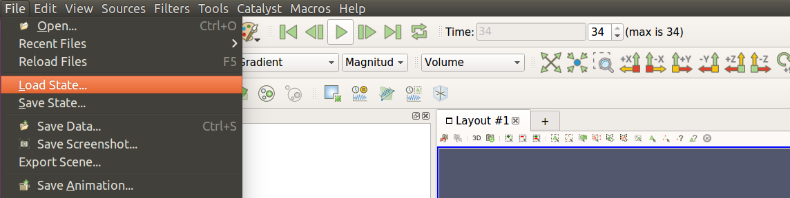
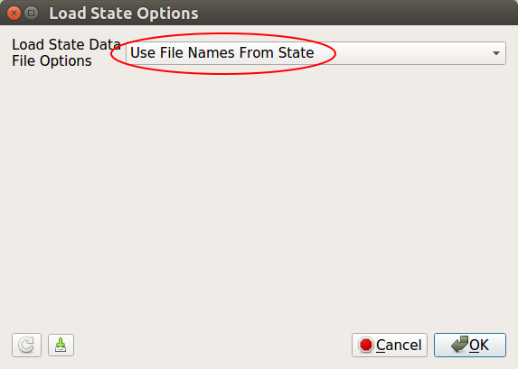

Visualization
Enabling visualization is very easy. BioDynaMo can be configured through its own
configuration file: bdm.toml. Visualization is just one of the many configuration
options. Let's take a look at how to set it. We shall continue using the hello_world
example from the previous exercise.
Create the configuration file
In your simulation directory hello_world create a new file called bdm.toml.
You can also do this from the command line with the following command:
touch bdm.toml
Export visualization files
One way to enable visualization is to export a visualization file every time step
(or every N time steps). In the bmd.toml file add the following lines:
[visualization] export = true export_interval = 1 [[visualize_sim_object]] name = "Cell" additional_data_members = [ "diameter_" ]
This will export a visualization file every time step. You can set the frequency
by setting the export_interval. Make sure that you run a good number of steps
so that the cells have time to divide. Set it to around 2000 for the hello_world example.
You can do this in src/hello_world.h in the scheduler.Simulate(time_steps) function.
Run your simulation with biodynamo run.
Now we need to open ParaView:
Warning
Make sure you start ParaView from the project directory. Otherwise, ParaView might not find the exported files.
paraview
Select "File->Load State" as shown below:

Navigate to your simulation output directory and select the pvsm file.

In the next window keep the default (Use File Names From State) and click OK.
